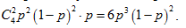

The shooter shoots at 3 targets until he shoots everything. The probability of a hit with one shot is p.
a) Find the probability that he needs exactly 5 shots.
b) Find the mathematical expectation of the number of shots.
a) The desired event occurs only if the first four shots have given two downed targets, and the last shot was successful. The probability of this is 
b) When the probability of a hit is p, the average number of shots needed to bring down the first target is 1/p. This is intuitively understandable, but strictly follows from the properties of the geometric distribution. This means that 1/p shots are required for the second target and the same number for the third one.
a) $6p^3 (1-p)^2$; b) 3/p.